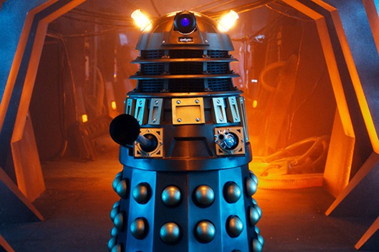

Os Daleks

Primeira aparição em 1963
Os Daleks nasceram sem nenhuma capacidade para sentir compaixão ou pena, e eram motivados apenas por ódio, medo e um sentimento implacável de que eles eram criaturas superiores. Eles já lutaram contra o Doutor inúmeras vezes no decorrer dos séculos. Poderoso, impiedosos e donos de um gênio maligno, eles já se provaram inimigos temíveis para o Doutor. Mas ele sempre conseguiu proteger a humanidade de seus ataques.
O cientista Davros, brilhante, porém inescrupuloso, criou os Daleks para garantir a sobrevivência de sua raça e para ajudá-lo a alcançar sua ambição de se tornar o ditador de todo o universo. Sua própria sobrevivência depende de uma cadeira de rodas equipada com aparelhos, que cobre a parte de baixo de seu corpo deformado.
Davros o criador dos Daleks
Como tudo começou
Nos anos finais da milenar guerra entre Thals e Kaleds, o cientista Davros modificou geneticamente sua própria raça, os Kaleds. Ele integrou sua espécie a um tanque robótico e removeu de todo seu povo a capacidade de sentir pena, compaixão ou remorso. Logo, os Daleks passaram a se ver como a raça suprema do Universo, com o objetivo de dominar e exterminar tudo o que fosse diferente deles.
Arco: The Daleks (originalmente exibido em 1963)
Curiosidade
No ano de 1999 o termo Dalek entrou para o Oxford English Dictionary, talvez o mais conceituado dicionário da língua inglesa. A presença de uma das raças de criaturas mais excêntricas do mundo da fantasia e ficção científica em um dos livros de maior prestígio do mundo resume o impacto da existência de Doctor Who na cultura britânica.Após 34 temporadas, o seriado britânico começa a fazer sucesso no Brasil, contando as aventuras do Senhor do Tempo do planeta Gallifrey. Para que você possa entender um pouco melhor desse culto, dissecamos a fisiologia dos alienígenas do planeta Skaro (ou Daleks, para os mais íntimos), os maiores antagonistas dos Doctors.
